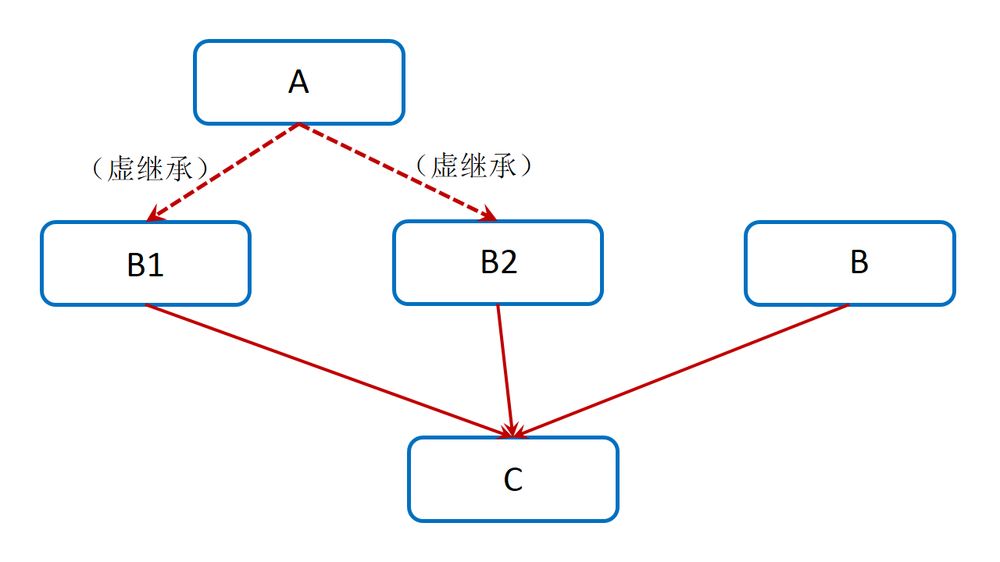

4. 类的大小
计算类的大小遵循以下原则：
内存对齐。
类的大小与普通数据成员有关，与成员函数、静态成员无关。即普通成员函数、静态成员函数、静态数据成员均对类的大小无影响。
虚函数对类的大小的影响体现在 虚函数表指针 的大小。
虚继承对类的大小的影响体现在 虚基类表指针 的大小。
以下结果均是在 32 位 Visual Studio 2013 下编译得到。
4.1. 空类
C++ 标准指出，不允许一个对象（当然包括类对象）的大小为 0，不同的对象不能具有相同的地址。这是由于：
new需要分配不同的内存地址，不能分配内存大小为 0 的空间 。避免除以
sizeof(*)时造成除数为 0 的错误。
每个类在内存中都有唯一的标识，因此空类被实例化时，编译器会隐含地为其添加一个字节，以作区分。
1class Empty
2{
3};
4// sizeof(Empty) = 1
4.2. 普通数据成员
遵循内存对齐原则。
1class A
2{
3 int a;
4 char c;
5};
6// sizeof(A) = 4 + 4 = 8
7
8class B
9{
10 double a;
11 char c;
12};
13// sizeof(B) = 8 + 8 = 16
4.3. 普通继承
普通类的继承，派生类的大小 = 派生类数据成员大小 + 基类数据成员大小。
1class A
2{
3 int a;
4};
5
6class B: public A
7{
8 char ch;
9 double b;
10};
11// sizeof(B) = 8 + 8 = 16 (对齐： 4+1 -> 8)
12
13class C: public A
14{
15 double c;
16 char ch;
17};
18// sizeof(C) = 8 + 8 + 8 = 24 (对齐： 4 -> 8, 1 -> 8)
继承空类
派生类继承空类后，派生类如果有自己的数据成员，而空基类的一个字节并不会加到派生类中去。
1class Empty
2{
3};
4
5class A: public Empty
6{
7 int b;
8};
9// sizeof(A) = 4
类包含空类对象数据成员
空类的1字节是会被计算进去的。
1class Empty
2{
3};
4
5class A
6{
7 int b;
8 Empty e;
9};
10// sizeof(A) = 4 + 4 = 8
4.4. 虚函数与继承
虚函数（Virtual Function）是通过一张 虚函数表（Virtual Table, vtable） 来实现的。 每当 创建一个包含有虚函数的类 或 从包含有虚函数的类派生一个类 时，编译器就会为这个类创建一个虚函数表保存该类 所有虚函数 的地址。
当一个类中包含虚函数时，会有一个指向其虚函数表的指针 vptr，系统为类指针分配大小为 4 个字节（即使有多个虚函数）。 当构造该派生类对象时，其成员 vptr 被初始化指向该派生类的 vtable。 所以可以认为 vtable 是该类的所有对象共有的，在定义该类时被初始化；而 vptr 则是每个类对象都有独立一份的，且在该类对象被构造时被初始化。
单继承
派生类的大小 = 派生类的普通数据成员的大小 + 1 个 vptr 指针的大小
1class Base
2{
3 virtual void f1();
4 virtual void f2();
5};
6// sizeof(Base) = 4
7
8class Derived: public Base
9{
10 virtual void f1();// 覆盖了基类中的 f1()，多态
11 virtual void f3();
12};
13// sizeof(Derived) = 4
多继承
每个基类都有自己的虚表（vtable）。
派生类的成员函数被放到了第一个基类的表中。
派生类的大小 = 派生类的普通数据成员的大小 + 基类的普通数据成员的大小 + \(n\) 个 vptr 指针的大小。\(n\) 是继承的有虚函数的基类的个数。
1class A
2{
3};
4// sizeof(A) = 1
5
6class B
7{
8 char ch;
9 virtual void f0();
10};
11// sizeof(B) = 4 + 4 = 8
12
13class C
14{
15 char ch1;
16 char ch2;
17 virtual void f1();
18 virtual void f2();
19};
20// sizeof(C) = 4 + 4 = 8
21
22class D: public A, public C
23{
24 int d;
25 virtual void f1();
26 virtual void f2();
27};
28// sizeof(D) = 4 + 4 + 1*4 = 12
29
30class E: public B, public C
31{
32 int e;
33 virtual void f0();
34 virtual void f1();
35};
36// sizeof(E) = 4 + 4 + 4 + 2*4 = 20
4.5. 虚继承
尽管派生列表中同一个基类只能出现一次，但实际上派生类可以多次继承同一个类。派生类可以通过它的两个直接基类分别继承同一个间接基类，也可以直接 继承某个基类，然后通过另一个基类再一次间接继承该类。
在默认情况下，派生类中含有继承链上每个类对应的子部分。如果某个类在派生过程中出现多次，则派生类中将包含该类的多个子对象。这会导致两个问题：第一， 浪费存储空间；第二，存在二义性。
虚继承可以解决上述问题。
{kind=link}
虚继承的目的是令某个类做出声明，承诺共享它的基类。其中，共享的基类子对象称为 虚基类 （上图中的类 A ）。 在这种机制下，不论虚基类在继承体系中 出现了多少次，在派生类中都只包含唯一一个共享的虚基类子对象。
虚继承底层实现原理与编译器相关，一般通过虚基类指针和虚基类表实现。 每个虚继承的子类都有一个 虚基类指针（Virtual Base Table Pointer，vbptr，占用一个指针的存储空间） 和虚基类表（ 不占用 类对象的存储空间） 需要强调的是，虚基类依旧会在子类里面存在拷贝，只是仅仅最多存在一份而已，并不是不在子类里面了。
实际上，虚基类指针指向了一个 虚基类表（Virtual Table） ，虚基类表中记录了虚基类与本类的偏移地址。 通过偏移地址，这样就找到了虚基类成员，而虚继承也不用像普通多继承那样维持着公共基类（虚基类）的两份同样的拷贝，节省了存储空间。
当虚继承的子类被当做父类继承时，虚基类指针也会被继承。上图中，C 继承了B1，B2，也就继承了2个虚基类指针。
总体需要考虑：数据成员的大小、虚基类指针的大小 、虚函数指针的大小。
1class A
2{
3 int a;
4};
5// sizeof(A) = 4
6
7class B :virtual public A
8{
9 int b;
10 virtual void myfunB();
11};
12// sizeof(B) = 16
13
14class C :virtual public A
15{
16 double c;
17 virtual void myfunC();
18};
19// sizeof(C) = 28
20
21class D :public B, public C
22{
23 int d;
24 virtual void myfunD();
25};
26// sizeof(D) = 52
4.6. 内存对齐
- 内存对齐，是为了让内存存取更有效率而采用的一种编译阶段优化内存存取的手段。
内存对齐是指首地址对齐，而不是说每个变量大小对齐。
分配内存的顺序是按照声明的顺序。
每个变量 相对于起始位置的偏移量必须是 该变量类型大小的整数倍 ，如果不是整数倍则空出内存，直到偏移量是整数倍为止。
结构体内存对齐要求结构体内每一个成员变量都是内存对齐的。
整个结构体的大小必须是结构体里面变量类型最大值的整数倍。
如果一个结构里有某些结构体成员，则结构体成员要从其内部“最宽基本类型成员”的整数倍偏移地址开始存储。比如，struct A 里存有struct B，B 里有char, int, double等类型的成员变量，那 B 应该从 8 的整数倍开始存储。
- 内存对齐的作用：
平台原因（移植原因）：不是所有的硬件平台都能访问任意地址上的任意数据的；某些硬件平台只能在某些地址处取某些特定类型的数据，否则抛出硬件异常。
性能原因：经过内存对齐后，CPU的内存访问速度大大提升。
1class Data
2{
3 char c;
4 int a;
5 char d;
6};
7// sizeof(Data) = 1 + (3) + 4 + 1 + (3) = 12，括号内表示补齐的字节数。
8// a 相对于起始位置的偏移量必须是 4 的整数倍，因此 c 后面需要补齐 3 个字节。
9
10class Data
11{
12 char c;
13 char d;
14 int a;
15};
16// sizeof(Data) = 1 + 1 + (2) + 4 = 8
17
18class BigData
19{
20 char array[33];
21};
22// sizeof(BigData) = 33
23
24class Data
25{
26 BigData bd;
27 //int integer; // 不管有没有注释这一行，sizeof(Data)结果一样
28 double d; // d的起始偏移量必须为 8 的倍数，且大于 33，则其偏移量为 40
29};
30// sizeof(Data) = 48
4.7. 位域
C/C++ 中以一定区域内的位（bit）为单位来表示的数据成为位域，位域必须指明具体的数目。 位域的作用主要是节省内存资源，使数据结构更紧凑。
一个位域必须存储在同一个字节中，不能跨两个字节，故位域的长度不能大于一个字节的长度
1struct BitField 2{ 3 unsigned int a:4; //占用4个二进制位 4 unsigned int :0; //空位域，自动置0，此时占满 1 个int存储单元，即 4 字节 5 unsigned int b:4; //占用4个二进制位，从第二个字节存储单元开始存放 6 unsigned int c:4; //占用4个二进制位 7 unsigned int d:5; //占用5个二进制位，剩余的3个bit不够存储4个bit的数据，从下一个存储单元开始存放 8 unsigned int :0; //空位域，自动置0，此时占满 2 个int存储单元，即 8 字节 9 unsigned int e:4; //占用4个二进制位，从第三个int存储单元开始存放 10}; 11// sizeof(BitField) = 3 * 4 = 12
取地址操作符
&不能应用在位域字段上位域字段不能是类的静态成员
位域字段在内存中的位置是按照从低位向高位的顺序放置的
1struct BitField 2{ 3 unsigned char a:2; //最低位; 4 unsigned char b:3; 5 unsigned char c:3; //最高位; 6};
位域的对齐
1struct BFA 2{ 3 unsigned char a:2; 4 unsigned char b:3; 5 unsigned char c:3; 6}; 7// sizeof(BFA) = 1 8 9struct BFB 10{ 11 unsigned char a:2; 12 unsigned char b:3; 13 unsigned char c:3; 14 unsigned int d:4; 15}; 16// sizeof(BFA) = 1 + (3) + 4 = 8
一个例子
1struct num 2{ 3 int a:3; 4 int b:2; 5 int c:1; 6}; 7 8int main() 9{ 10 struct num n = {8, -6, 5}; 11 cout << n.a << endl; 12 cout << n.b << endl; 13 cout << n.c << endl; 14 return 0; 15}
\(8 = (00001000)_2\) ， \(8\) 在计算机中的补码也是
00001000， \(a\) 用3位表示，取低位为000(00000000)，原码也是00000000，则 \(a = 0\) 。\(-6 = (10000110)_2\) ， \(-6\) 在计算机中的补码是
11111010， \(b\) 用2位表示，取低位为10(11111110)，原码是10000010，则 \(b = -2\) 。\(5 = (00000101)_2\) ， \(5\) 在计算机中的补码也是
00000101， \(c\) 用1位表示，取低位为1(11111111)，原码是10000001，则 \(c = -1\) 。
Note
C++ 标准库提供了一个 bitset 类模板，它可以辅助操纵位的集合。
4.8. 参考资料
c++ 类大小问题
c++类的大小计算
虚继承
《C++ Primer 第5版 中文版》 Page 717-718。
C++中虚继承的作用及底层实现原理
c++中的内存对齐
C/C++ 内存对齐原则及作用
C/C++位域知识小结